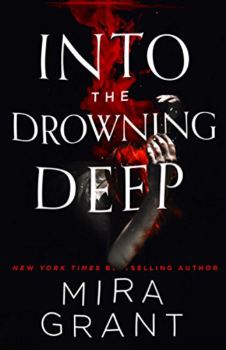

Into the Drowning Deep
8/10
This book is really cool. If you’ve read my other reviews, then you know what I’m going to say, but I wish it was more gay. I am rarely satisfied. The folklore and mermaid aspect is great in this book. It was an addictive read. I didn’t want to put this book down. It’s action packed and has likable characters. I would recommend this book to people who like horror novels.